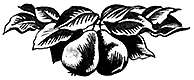

Груша

Хозяйственное значение и история культуры груши
Груша является ценнейшей плодовой породой умеренно тёплого климата. Плоды её представляют собою вкусный витаминозный продукт питания.
Кроме потребления в свежем виде, плоды груши весьма ценны как сырьё для технической переработки и консервирования. Из них готовят вина, безалкогольные напитки, повидло, цукаты, компоты, грушевый мёд (бекмес) и т. п. Даже дикие груши являются ценным сырьём для технической переработки. В их плодах 70–85% воды, 6–13% сахаров, 0,1–0,2% кислот (главным образом, лимонной и яблочной). В сухом виде плоды груши используются для компотов. Многие сорта груш, например, Ильинка, Глива украинская и др., очень хороши для сушки.
В культуре груша находится с доисторических времён. Приблизительно за тысячу лет до нашей эры находим упоминание о культуре груши у древних греков. В героической поэме «Одиссея» Гомера, возникновение которой относится к VIII в. до нашей эры, описывается сад царя Алкиноя и Феакии (на острове Корфу), в котором среди других плодовых деревьев росли и груши.
За несколько столетий до нашей эры культура груши была известна древним римлянам и, вероятно, позаимствована ими от греков. Так, римские писатели Катон, Варрон, Колумелла, Плиний, Палладий говорят о груше как о распространённом плодовом дереве.
От греков и римлян культура груши перешла к современным западноевропейским народам.
Культура груши в СССР
В СССР груша разводится с древних времён. В Крыму эту ценную плодовую породу культивировали ещё греки-колонисты задолго до нашей эры. Родиной обыкновенной дикой груши, от которой произошло большинство наших культурных сортов, по всей вероятности, является Кавказ.
Одним из самых ранних письменных памятников, свидетельствующих о культуре груши в России, является сборник «Домострой», изданный в XVI в.
Произрастающая в европейской части СССР груша менее зимостойка и более теплолюбива, чем яблоня, поэтому северная граница её промышленной культуры проходит значительно южнее, чем северная граница промышленной культуры яблони, и несколько южнее границы распространения обыкновенной дикой груши (Pirus communis L.), а именно: по линии Волочиск — Проскуров — Винница — Умань — Кривой Рог — Запорожье — Ростов — Астрахань. Северная граница произрастания культурных груш совпадает с северной границей промышленной культуры яблони, т. е. проходит по линии Ленинград — Ярославль — Горький — Уфа — Чкалов, поднимаясь значительно севернее границы распространения обыкновенной дикой груши.
Как и по другим плодовым породам, благодаря работам И. В. Мичурина, создавшего ряд ценных сортов, промышленная культура груши неуклонно продвигается на север и восток. Так, в областях средней полосы РСФСР (Воронежская, Курская, Орловская, Тамбовская и др.), где раньше разводились, главным образом, летние груши, в настоящее время культивируются зимние и осенние сорта (Бере зимняя Мичурина, Бере Октября и др.).
По территории СССР груша распространена неравномерно. По степени распространённости этой породы и её экономическому значению территория Союза ССР может быть разделена на 4 зоны:
- южная зона промышленной культуры груши,
- переходная зона,
- средняя зона,
- северо-восточная зона.
Южная зона охватывает все южные районы Союза ССР, включая юго-западные и южные районы Украины, южную часть Ростовской области и южную часть Астраханской области, а также среднеазиатские республики. Северная граница этой зоны может быть условно проведена по линии Волочиск — Проскуров — Винница — Умань — Кривой Рог — Запорожье — Ростов — Астрахань. Под грушей здесь заняты значительные площади. Так, например, в Крыму и в некоторых районах Северного Кавказа удельный вес её доходит до 25–30%. Это зона промышленной культуры лучших десертных груш и многих местных хозяйственных сортов.
В наиболее южных районах зоны (Крым, Кавказ, Узбекистан) с успехом культивируются первоклассные десертные сорта с преобладанием зимних:
- Бере Боск,
- Лесная красавица,
- Любимица Клаппа,
- Вильямс,
- Бере Арданпон,
- Кюре,
- Деканка зимняя,
- Сен-Жермен,
- Рояль зимний,
- Оливье де-Серр,
- Пасс-Крассан и др.
Переходная зона включает юго-западную часть Белоруссии, северные и центральные районы Украины, южные районы Курской и Воронежской областей, северную часть Ростовской области и южную часть Сталинградской области. Северная граница зоны проходит по линии Минск — Гомель — Белгород — Россошь — Сталинград.
В этой зоне удельный вес груши, по мере продвижения с юга на север, довольно резко падает, спускаясь в самых северных районах её до 2–3%. Культура груши здесь строится на местных сортах летнего и осеннего созревания и носит, главным образом, потребительский характер, поднимаясь до уровня промышленной культуры лишь в отдельных самых благоприятных районах. Зимние сорта здесь почти отсутствуют. Из высококачественных десертных сортов здесь культивируются только самые зимостойкие: Лесная красавица и Любимица Клаппа, а в более южных районах зоны — Бере Лигеля. Из сортов более южного ареала во многих районах этой переходной зоны широко распространены Ильинка и Панна, а в южной части Белорусской ССР — Бере слуцкая.
Средняя зона охватывает области средней полосы и Среднего Поволжья. Северная граница её проходит через Ленинград — Ярославль — Горький — Уфу — Чкалов. Здесь груша очень мало распространена, встречаясь в садах отдельными деревьями. Культивируются в этой зоне, главным образом, нетребовательные среднерусские летние сорта: Бессемянка, Тонковетка, Лимонка, Сапежанка и др. Из осенних — Бергамот осенний и его местные разновидности: Бергамот курский, воронежский и волжский, Маликовка и др.
В настоящее время в этой зоне начинают распространяться мичуринские сорта:
Северо-восточная зона включает в себя северные районы европейской части СССР, а также районы Приуралья, Урала, Сибири и Дальнего Востока. Здесь культура груши в настоящее время почти совсем отсутствует из-за суровости климата. В этих районах возможна культура сортов груши, полученных на основе высокозимостойкой уссурийской груши, в чём уже имеются определённые успехи на Дальнем Востоке, где советскими селекционерами (Лукашевым, Ефремовым, Шурановым) выведен ряд высокозимостойких сортов.
Основные районы культуры груши в РСФСР — Крым и Кавказ.
Крым является одним из наиболее благоприятных районов для культуры груши. Здесь под грушей находятся значительные площади. В Крыму с успехом культивируют ценнейшие по вкусовым качествам десертные сорта — Деканка зимняя, Бере Арданпон, Пасс-Крассан, Оливье де-Серр, Бергамот Эсперена и др.
По данным переписи садов 1945 г., более 70% грушевых насаждений Крыма составляют следующие 8 промышленных сортов (в процентах):
- Бере Боск — 19,8%
- Бере Арданпон — 13,3%
- Вильямс — 11,3%
- Кюре — 6,5%
- Деканка зимняя — 6,4%
- Рояль зимний — 6,0%
- Сен-Жермен — 4,0%
- Любимица Клаппа — 4,0%
Из других десертных сортов в Крыму разводятся:
- Лесная красавица,
- Дюшес Ангулем,
- Бере Гарди,
- Бере Лигеля,
- Бере Наполеон,
- Бере Диль,
- Бере Клержо,
- Бере Жиффар,
- Деканка осенняя и др.
В старых садах часто встречаются местные крымские сорта:
- Кирез армуд,
- Консулу,
- Поз-дурган,
- Мисон и др.
Лучшие по качеству груши дают Алуштинский район и Качинская долина.
Кавказ — район огромных природных богатств и, в частности, большого обилия диких груш. Дикая обыкновенная груша (Pirus communis L.) образует здесь сплошные леса, занимающие сотни и тысячи гектаров. Такие массивы тянутся по предгорным районам Краснодарского края, в Северо-Осетинской АССР, в Закавказье. Значительные заросли диких груш и местных сортов встречаются в нагорной части Черноморского побережья, на пространстве от Геленджика до Сочи, особенно в районах Михайловского перевала, реки Шаха и с. Красная Поляна. Дикими грушами изобилуют Дагестан, Азербайджан, Грузия, Армения, Абхазия.
Такого обилия диких груш, как на Кавказе, нет нигде в Союзе ССР, а может быть и на всём земном шаре. Культурные груши здесь также повсеместно распространены, хотя из-за большой неоднородности природных условий не все районы Кавказа благоприятны для разведения этой породы. Полоса широкой культуры груши, так же, как и яблони, лежит по северным предгорьям главного хребта и в нагорной части Закавказья, преимущественно восточного. Но нужно отметить, что культура груши на Кавказе ещё недостаточно развита, высококачественные селекционные сорта не получили здесь ещё широкого распространения.
Природные условия многих районов советского юга вполне благоприятствуют развитию широкой промышленной культуры груши.
Видовой состав груши
Груша относится к роду Pirus (груша), который входит в подсемейство Romaceae (яблочных, или семечковых) семейства Rosaceae (розоцветных). Раньше к роду Pirus ботаники относили не только грушу, но и яблоню, айву, мушмулу и иргу. В настоящее время большинство ботаников эти плодовые породы относят к нескольким родам, которые отчасти соответствуют обычным названиям этих пород.
На территории СССР произрастает 18 видов груши.
Из них наибольшее значение для плодоводства как родоначальные формы культурных сортов, подвои и непосредственно используемые плодовые растения, произрастающие в диком состоянии, имеют следующие 5 видов:
- обыкновенная лесная груша,
- снежная груша,
- лохолистная груша,
- уссурийская груша,
- песчаная, или китайская, груша.
От каких видов произошли европейские культурные сорта, точно неизвестно. По Г. А. Рубцову, в происхождении их считается вероятным участие следующих видов: обыкновенной, снежной, лохолистной, миндальной и сирийской груши. Наибольшая роль в этом, несомненно, принадлежит обыкновенной лесной груше. Некоторые помологи считают, что почти всё бесчисленное количество сортов груш, из которых, вероятно, более пяти тысяч получило названия, произошло от этого вида. Некоторые авторы полагают, что непосредственно от обыкновенной лесной груши произошла лишь часть наиболее древних и малоизменённых сортов, большинство же современных сортов возникло в результате скрещивания Р. communis с другими видами.
Приводим краткое ботаническое описание упомянутых выше пяти видов, составленное по литературным данным (по Г. А. Рубцову и др.).
Обыкновенная, или лесная, груша (Pirus communis L.)
Рис. 155. Дикая лесная груша.
Родиной этого вида одни считают Закавказье, другие — Малую Азию, третьи — Центральную Азию, четвёртые — обширную область, охватывающую Южную Европу и Малую Азию.
Распространена она на Кавказе, в Средней и Южной Европе, Малой Азии, Северном Иране. В СССР доходит до 49–50° с. ш. На равнинах СССР и Средней Европы растёт в лесах, рощах, между кустарниками, являясь спутником лиственных пород: дуба, берёзы; на юге — в горных лесах, поднимаясь на Кавказе до 2000 м над уровнем моря.
Большие массивы дикой лесной груши находятся на Кавказе, где она образует сплошные леса; на Украине — в Каменец-Подольской, Винницкой, Киевской, Житомирской, Черниговской, Сумской, Харьковской областях; в южной части Курской (Корочанский, Белгородский районы) и Воронежской областей (долина р. Донца, Острогожский район).
Рис. 156. Заросли дикой лесной груши в Воронежской области.
- Дерево пряморослое, крупных размеров, нередко достигающее 20–25 м в высоту; иногда кустарник. Дерево живёт до 200 лет.
- Крона широкопирамидальная.
- Ветки с колючками, иногда без них.
- Почки и побеги голые, реже — опушённые.
- Листья яйцевидные, продолговато-яйцевидные, округлые, сердцевидные и обратнояйцевидные, различной величины; длина их обычно лишь на 0,33 превосходит ширину; верхушка листа коротко- или длиннозаострённая; край остропильчатый или цельный; поверхность голая, блестящая, в молодом возрасте иногда по краю имеется паутинистое опушение; черешок тонкий, длиннее пластинки или равный ей по длине.
- Соцветие — щиток из 6–9 цветков.
- Цветоножки 1,5–3 см длины, войлочно-опушённые.
- Цветки около 2,5–3,0 см в диаметре, белые.
- Плоды грушевидные, округлые или сплюснутые, сильно изменчивые по величине и форме, до 3–4 см длины и 1,5–2 см ширины, зелёные, иногда краснеющие, реже жёлтые; твёрдые, терпкие, становятся мягкими и съедобными после брожения. Чашечка неопадающая.
Плоды используются для сушки, приготовления компотов, сидра и безалкогольных напитков, на корм скоту и т. п. Семена идут для выращивания подвоев. Особенно большое значение может иметь использование плодов лесной груши в районах Предкавказья, где только в Краснодарском крае, по данным Трусевича, грушевыми лесами (с примесью яблони) занято свыше 30 тыс. га, а возможный сбор плодов (вместе с яблоками) определяется в 139 тыс. т. Плоды дикой лесной груши содержат 70–85% воды, 6–13% сахара, 0,1–0,2% кислоты. Древесина тяжёлая, мелкослойная, прочная, красновато-коричневая, под чёрным лаком лучшая имитация чёрного дерева; она употребляется на разные столярные и токарные изделия, на музыкальные инструменты. Из коры добывается коричневая краска.
Отличительные признаки вида:
- яйцевидные или округлые голые листья с остропильчатым или цельным краем;
- голые почки и побеги;
- неопадающая чашечка.
Снежная груша (Pirus nivalis Jacq.)
Получила своё название, вероятно, за белое опушение побегов, почек и листьев. Родиной его считают Среднюю Азию, Иран, где снежная груша имеется в значительных количествах в виде диких зарослей. Встречается в Альпах и Южной Европе. Она менее зимостойка, чем лесная груша, но значительно превосходит её по засухоустойчивости. Растёт большей частью пo склонам гор, иногда переходит в равнины в виде кустовидных и даже кустарниковых зарослей.
Рис. 157. Снежная груша - ветка, соцветие, плоды и листья.
- Дерево небольшое, с развесистой кроной, без колючек.
- Сучья короткие, очень толстые, часто изогнутые, прочные, упругие.
- Побеги покрыты густым белым опушением.
- Листья овальные или обратнояйцевидные, с клиновидным основанием, 5–8 см длины, 2–4 см ширины с внезапно или очень коротко-заострённой верхушкой, цельнокрайние или в верхней части слабо зазубренные; в молодости с обеих сторон бело-опушённые, впоследствии на верхней стороне голые, блестящие; черенок короткий, 1–3 см.
- Соцветия опушённые, содержат до 10 цветков.
- Цветки крупные, белые; столбики короче тычинок, внизу лохматые.
- Плоды до 5 см в диаметре, кубаревидные, желтовато-зелёные, с румянцем на солнечной стороне, кислого, терпкого вкуса. Созревают поздно, при созревании делаются сладковатыми. Используются так же, как и плоды лесной груши, от которых они мало отличаются по своим качествам.
Отличительные признаки вида:
- обратно-яйцевидные листья;
- белое опушение на нижней стороне листьев, побегах, почках и соцветиях;
- отсутствие колючек;
- очень толстые укороченные ветви;
- круглые белые цветки;
- позднее созревание плодов.
Разновидности снежной груши мало изучались. К биологическим особенностям этого вида можно отнести его значительную засухоустойчивость, в связи с чем эта груша может представлять интерес как подвой в засушливых районах.
Снежная груша считается прародительницей ряда южных культурных сортов, которые получились от естественного скрещивания её с лесной грушей.
Лохолистная груша (Pirus elaeaglifolia Pall.)
Этот вид находится в тесном родстве со снежной грушей. Раньше он считался разновидностью последней; в настоящее время ботаники его выделяют в самостоятельный вид. Растёт по горам в Крыму, Закавказье и Малой Азии. В культуре поддаётся улучшению. В Крыму встречаются деревья (по-видимому, гибридного происхождения) с совершенно съедобными плодами. Лохолистная груша может служить подвоем для культурных груш на сухих каменистых местах.
Рис. 158. Лохолистная груша. Ветки с плодами, плоды в продольном и поперечном сечении и семена. Вверху справа лепесток и завязь в разрезе..
- Небольшое дерево или кустарник с округлой спутанной кроной, с колючками.
- Побеги сильно опушённые.
- Почки тупые, сероопушённые.
- Листья обратно-ланцетные или узкоэллиптические, тупые или коротко-заострённые на вершине, с клиновидным основанием, длиной в 4–7 см, шириной в 1,5–2,5 см, цельнокрайние, серовато-опушённые с обеих сторон или на верхней стороне голые, имеют сходство с листьями дикой маслины; черенки короткие, 1–4 см.
- Цветочные почки белоопушённые; цветки мельче, чем у снежной груши и лесной.
- Плоды мелкие, 2,5–3 см в диаметре, желтовато-зелёные, с короткими плодоножками, довольно сочные.
Отличительные признаки вида:
- обратно-ланцетные, серебристо-опушённые снизу листья;
- опушённые побеги;
- тупые, опушённые почки;
- спутанная крона;
- мелкие ветви с колючками.
Уссурийская груша (Pirus ussuriensis Maxitn)
Это самый холодостойкий вид груши. Распространён в Северо-Восточной Азии, Северном Китае и Корее. В Сибири доходит до Хабаровска. В садах встречается в Благовещенске, Хабаровске, Омске и других местностях Дальнего Востока и Сибири.
Рис. 159. Уссурийская груша.
- Дерево до 10–15 м высоты, с колючками.
- Крона широкая, нередко шаровидная, густая.
- Кора неровная, тёмно-пепельная.
- Побеги голые, желтовато-серые до красно-коричневых на втором году, позднее желтовато-серые или желтовато-коричневые.
- Листья тонкие, округло-яйцевидные или яйцевидные, в основании закруглённые или сердцевидные, длинно-заострённые, почти голые; край листа имеет характерную для вида острую ресничато-пильчатую зазубренность.
- Соцветия многоцветковые; цветоножки 1–2 см длины, голые.
- Цветки округлые, 3–4 см в диаметре, белые.
- Плоды небольшие, 3–4 см в диаметре, округлые или несколько удлинённо-округлые с лёгкой перетяжкой у чашечки, на короткой плодоножке, зеленовато-жёлтые, с неопадающей чашечкой.
Основные отличительные признаки:
- широкая крона;
- ресничато-пильчатый край листа;
- неопадающая чашечка;
- холодостойкость дерева;
- поверхностные мочковатые корни.
С каждым годом значение уссурийской груши для плодоводства возрастает. И. В. Мичурин широко использовал её в качестве высокозимостойкой исходной формы при выведении новых зимостойких сортов груши (Бере зимняя Мичурина, Толстобежка, Бере Октября и др.). Последователь Мичурина хабаровский плодовод-опытник А. М. Лукашев от скрещивания уссурийской груши с культурным сортом вывел новые ценные сорта для Дальнего Востока и Сибири (Тёма, Поля, Ольга и Лида). Этим же путём выведен ряд новых сортов дальневосточными опытниками-мичуринцами Ефремовым, Шурановым и др. Научный сотрудник Алтайской опытной станции Н. Н. Тихонов, используя в своей селекционной работе уссурийскую грушу, вывел сорта: Первенец Алтая, Зоя и др.
Таким образом, этот вид имеет исключительную ценность и большую перспективу как исходный материал для селекции груши. Вторая ценность уссурийской груши заключается в том, что она применяется как холодостойкий подвой на Дальнем Востоке, в Сибири и на Урале. Следует, однако, отметить, что предварительные опытные данные говорят о том, что с европейскими культурными сортами уссурийская груша даёт плохое срастание, поэтому использование её как подвоя в европейской части СССР пока стоит под вопросом.
Песчаная, или китайская, груша (Pirus serotina Rehd. Pirus sinensis по некоторым авторам)
Родиной этого вида является Центральный и Западный Китай. Находится издавна в культуре. У нас, в Приморском крае, имеется ряд сортов, происходящих от песчаной груши.
Рис. 160. Песчаная или китайская груша.
- Дерево до 15 м высоты, без колючек.
- Побеги голые или пушистые, на второй год красно-коричневые.
- Почки продолговато-яйцевидные, голые.
- Листья крупные, продолговато-яйцевидные, редко — яйцевидные или сердцевидные, голые или слегка шерстистые в молодости, длинно-заострённые, край листа остропильчато-ресничатый.
- Цветки крупные.
- Плоды кругловатые, 3 см в диаметре, коричневые, с бледными точками, мякоть твёрдая. В отличие от других видов, чашечка на плодах опадает.
К особенностям этой груши следует отнести также большую способность её к вегетативному размножению. Эта способность передалась некоторым культурным сортам, происшедшим от песчаной груши. Зимостойкость этого вида значительно ниже, чем уссурийской груши.
Основные отличительные признаки:
- крупные, яйцевидные, длиннозаострённые листья, ресничато-пильчатый край листа;
- опадающая чашечка;
- твёрдая мякоть.
Сравнительная характеристика сортов груши по важнейшим производственно-биологическим признакам
Зимостойкость
Из южных сортов наиболее зимостойкими являются:
- Ильинка,
- Панна,
- Бере слуцкая,
- Глива украинская,
- Глек,
- Александровка,
- другие местные украинские и белорусские сорта.
Эти сорта вполне зимостойки в пределах всей Украины и южной части Белоруссии.
Среднюю группу по зимостойкости составляют сорта, которые являются практически зимостойкими в условиях южных и юго-западных районов лесостепной полосы Украины и в средних районах степной полосы.
Сюда относятся:
- Любимица Клаппа,
- Лесная красавица,
- Русселе штутгартский,
- Бере Лигеля,
- Жозефина Мехельнская,
- Бон-Луиз Авранш,
- Бере Гарди,
- Марианна,
- Бере Аманли,
- Вильямс,
- Кюре и др.
Наиболее теплолюбивы и вместе с тем наименее зимостойки:
- Деканка зимняя,
- Пасс-Крассан,
- Оливье де-Серр,
- Бергамот Эсперена,
- Дюшес Ангулем,
- Бере Арданпон,
- Рояль зимний,
- Триумф Жодуань,
- Сен-Жермен,
- Бере Жиффар,
- Бере Боск и др.
Как мы видим, в эту группу входят, главным образом, зимние сорта. Для успешной культуры их требуются особо благоприятные условия климата, почвы и местоположения. Эти сорта для типичных южных районов, отличающихся длинным вегетационным периодом, большим количеством тепла летом и мягкой зимой.
В группе среднерусских сортов наибольшей зимостойкостью отличаются:
- Тонковетка и Бессемянка;
- к ним приближаются мичуринские сорта:
Меньшей, по сравнению с перечисленными сортами, зимостойкостью обладают:
- Бергамот осенний,
- Маликовка,
- Лимонка,
- Сапежанка,
- Белолистка,
- Бере зимняя Мичурина,
- Бере Октября,
- Толстобежка.
Наиболее высокой зимостойкостью в СССР отличаются груши дальневосточносибирской группы:
- сорта Лукашева (Поля, Ольга, Тёма, Лида),
- сорта Ефремова, Шуранова и другие, полученные на основе уссурийской груши.
Сорта Лукашева растут в открытой форме в областях Дальнего Востока, южной Сибири и на Урале. Из них наиболее зимостойким является сорт Лида. Кроме непосредственного использования в производстве, сорта Лукашева имеют большое значение как исходные формы при выведении новых, зимостойких сортов груши.
Урожайность
Прежде всего нужно отметить, что сорта груши в массе своей позже вступают в пору плодоношения, чем сорта яблони.
Давать сравнительную характеристику урожайности сортов груши довольно трудно. Так как урожайность больше, чем какой-либо другой признак, зависит от агротехники, почвы и местоположения, то вполне понятно, что один и тот же сорт в различных условиях даёт разные урожаи. К тому же по большинству сортов мы не располагаем сравнимыми данными, полученными в одинаковых условиях. В ряде случаев урожайность сорта сильно варьирует в зависимости от района культуры. Так, например, Бере Боск в Крыму отличается очень высокой урожайностью, между тем как в Краснодарском крае, Дагестане и в других районах Северного Кавказа даёт обычно только средние урожаи. Примерно так же ведёт себя в Крыму и на Северном Кавказе Деканка зимняя. Сорт Оливье де-Серр даёт высокие урожаи только в Узбекистане; в Крыму же и на Кавказе урожайность его обычно не поднимается выше средней.
Но, несмотря на сильную зависимость урожайности от агротехники и природных условий, всё же и сортовые особенности здесь сильно сказываются. Имеются сорта более урожайные и менее урожайные.
Среди сортов южного ареала по высокой урожайности выделяются:
- Ильинка,
- Панна,
- Дуля астраханская,
- Русселе штутгартский,
- Бергамот черкесский,
- Вильямс,
- Кюре,
- Бере слуцкая,
- Сен-Жермен,
- Рояль зимний,
- Лесная красавица,
- Любимица Клаппа,
- местные крымские, дагестанские и украинские сорта (Глива украинская, Александровка и др.).
Из сортов средней полосы к наиболее урожайным относятся:
Среднеурожайными сортами являются на юге:
Весьма капризны в отношении урожайности:
Сроки цветения и перекрёстное опыление у груши
Так как почти все культурные сорта груши являются практически самобесплодными, т. е. не оплодотворяются и не завязывают плодов при опылении собственной пыльцой, то для получения нормальных урожаев грушевых насаждений должно быть обеспечено перекрёстное опыление.
Опытными учреждениями по плодоводству ведутся экспериментальные работы по изучению степени самоплодности и перекрёстной плодовитости сортов груши и других плодовых пород. В результате этих опытов установлены лучшие опылители для большинства стандартных сортов груши. Кроме физиологической совместимости с опыляемым сортом, т. е. способности оплодотворять его, сорта-опылители должны удовлетворять следующим требованиям:
- они должны подбираться из числа стандартных сортов;
- цвести одновременно с опыляемым сортом;
- не позже опыляемого сорта вступать в пору плодоношения и обладать примерно одинаковой с ним долговечностью;
- при подборе опылителей для сада предпочтение должно отдаваться сортам, которые являются взаимоопылителями с опыляемыми сортами и принадлежат к одной группе по сроку созревания.
При решении вопроса о подборе сортов-опылителей необходимо знать сроки цветения их, поэтому приводим группировку сортов груши по этому признаку (табл. 36).
Группировка сортов груши по сроку цветения
Сорта, входящие в смежные группы по срокам цветения, могут быть взаимоопылителями, но раноцветущие сорта не могут быть опылителями для поздноцветущих и наоборот.
Устойчивость сортов груши к парше
Известно, какое большое хозяйственное значение имеет устойчивость сортов к различным грибным заболеваниям и в первую очередь к такому бичу грушевых садов, как парша. Сорта, сильно поражаемые этой болезнью, не могут успешно культивироваться в местностях с влажным климатом и сырой почвой, а также в низких или закрытых местностях, лишённых воздушного дренажа. Эти сорта требуют тщательной и систематической борьбы с грибом Fusicladium pirinum. Приводим группировку сортов груши по устойчивости их плодов к парше (табл. 37).
Группировка сортов груши по устойчивости их плодов к парше
Товарные и потребительские качества плодов
Наиболее важными с хозяйственной точки зрения качествами плодов груши, как и плодов других плодовых пород, являются: вкусовые достоинства, величина, сроки потребления плодов или способность их храниться в свежем виде более или менее продолжительное время. По вкусовым качествам плодов сорта груши можно распределить на следующие 4 группы (табл. 38).
Группировка сортов груши по вкусовым качествам плодов
По величине плодов сорта груши распределяются следующим образом (табл. 39).
Группировка сортов груши по величине плодов
По срокам созревания и потребления плодов сорта груши разделяются на 3 группы:
- летние,
- осенние,
- зимние.
Приведём распределение сортов груши по вышеназванным группам (табл. 40).
Распределение сортов груши по срокам созревания и потребления плодов
Как видно из таблицы 40, средняя полоса Союза ССР очень бедна зимними сортами груши, а Дальний Восток и Сибирь совсем их не имеют. Это выдвигает задачу перед селекционерами — создать хорошие зимние сорта для средней полосы и зоны пионерского плодоводства.
Большое хозяйственное значение имеют сроки наступления потребительской зрелости и продолжительность хранения плодов в свежем виде. Само собою разумеется, что эти сроки сильно варьируют в зависимости от района выращивания плодов, а также от метеорологических условий года и агротехнических воздействий. Приводим график потребления плодов сортов груши, выращенных в центральной части Краснодарского края (рис. 161). График составлен на основании многолетних опытных данных Краснодарской плодовой опытной станции (Л. М. Сергеев).
Рис. 161. Сроки потребления плодов различных сортов груши в условиях Краснодарскою края.
(по данным Краснодарской опытной станции)
Из графика видно, что культивируемые в Краснодарском крае сорта груши, даже при обычных способах хранения (без холодильника), обеспечивают потребление груш в свежем виде почти на протяжении круглого года: с половины июня до конца мая следующего года. Если даже исключить из приведённого в графике списка сортов самый ранний сорт Малгоржатку и самые поздние Тулузу и Форель, которые в настоящее время не являются здесь стандартными сортами, то и тогда культивируемый в крае сортимент груши даёт возможность иметь здесь свежие плоды, при обычном хранении их, с начала июля до февраля, а при хранении в холодильниках — до самой весны.
С передвижением на север сроки наступления съёмной и потребительской зрелости у одних и тех же сортов отодвигаются и лёжкость их значительно увеличивается. Это ясно видно из графика потребления плодов в условиях южной части Киевской области Украинской ССP (рис. 162).
Рис. 162. Сроки потребления плодов различных сортов груши в условиях Киевской области.
(по данным Млеевской опытной станции)
Чтобы убедиться в том, как сильно действует климатический фактор на время созревания и лёжкость плодов, достаточно сравнить сроки созревания некоторых сортов в Краснодаре и Киевской области. Возьмём летний сорт Любимицу Клаппа. В Краснодаре она обычно созревает в конце июля и лежит до 15 августа. В Киевской области эта же груша обычно созревает около 20 августа и лежит до 5 сентября. Таким образом, срок созревания её передвигается почти на месяц. То же можно сказать и о других сортах. Из культивируемых в южной зоне сортов груши наиболее лёжкими являются Пасс-Крассан, Оливье де-Серр, Бергамот Эсперена, а также мало распространённые из-за посредственного вкуса Тулуза и Форель.
Морфологические признаки сортов груши
В настоящее время известны до пяти тысяч сортов груши. С каждым годом число их увеличивается. В связи с этим увеличиваются и трудности в распознавании сортов.
В этом отношении большую помощь могут оказать морфологические признаки.
Морфологические признаки дерева
Важным внешним признаком грушевого дерева является форма кроны.
У груш наиболее часто встречаются следующие типы кроны:
- шаровидная или округлая,
- узкопирамидальная,
- широкопирамидальная,
- пониклая,
- неправильная.
По величине различают деревья:
- большие,
- средней величины,
- мелкие.
У одних сортов крона густая (Лукашевки), у других — редкая (Бере Боск), у третьих — средней густоты (Бере зимняя Мичурина).
Побеги бывают:
- по форме — прямые (Вильямс), коленчатые (Оливье де-Серр), дугообразные (Бере Боск);
- по толщине — толстые, средние и тонкие;
- по длине — длинные, средние и короткие;
- по окраске — зелёные, сероватые, коричнево-бурые, желтоватые, розовые, лиловые, тёмно-красные.
Почки на побегах бывают:
- прижатые,
- слегка оттопыренные,
- сильно оттопыренные.
Листья являются весьма характерными для сортов.
Листья различаются по:
- величине,
- форме,
- окраске,
- рельефу листовой пластинки,
- зазубренности края листа и др.
Наиболее часто встречаются следующие формы листа:
- круглая,
- яйцевидная (Дочь Бланковой),
- эллиптическая,
- обратно-яйцевидная,
- продолговатая.
По рельефу пластинки листья бывают:
- прямые (Кюре, Тонковетка);
- сложенные вдоль центральной жилки (Деканка зимняя, Бергамот осенний);
- волнистые (Бере Арданпон, Дочь Бланковой);
- скрученные по продольной оси (Бергамот Эсперена) и т. д.
Край листа бывает:
- цельный,
- пильчатый,
- городчатый (с закруглёнными тупыми зубчиками),
- пильчато-городчатый,
- зубчатый (с прямыми зубчиками).
У уссурийской груши и сортов, от неё происшедших, край листа ресничато-пильчатый (с зубчиками, оканчивающимися ресничками).
Вершина листа у сортов груши заостряется постепенно или внезапно, а сам кончик бывает длинный или короткий. В зависимости от характера заострённости вершины и длины кончика различают листья постепенно заострённые с длинным или коротким кончиком и внезапно заострённые. Соцветия у сортов груши содержат от 5 до 17 цветков.
Цветки у большинства сортов груши средней величины (2–3 см в диаметре); редко встречаются крупные (Рояль зимний, Тонковетка) и мелкие цветки.
Морфологические признаки плода
Плод груши состоит из следующих частей:
- плодоножка;
- воронка, или углубление плодоножки;
- блюдце, или чашечное углубление;
- чашечка;
- подчашечная трубка;
- кожица;
- мякоть;
- сердечко, или семенное гнездо;
- семенные камеры;
- ось плода;
- семена.
Величина
По величине плода культурных сортов груши очень изменчивы — от очень мелких, в 15–20 г весом (Малгоржатка), до очень крупных, в 3 кг весом (Анжуйская красавица на карликах).
Для классификации груш по величине можно применить следующую шкалу:
- Очень мелкие — до 25 г
- Мелкие — 25–50 г
- Ниже среднего — 50–100 г
- Средние — 100–150 г
- Выше среднего — 150–200 г
- Крупные — 200–300 г
- Очень крупные — свыше 300 г
Так как при культуре на карликовых подвоях размер плодов груши сильно увеличивается, нужно всегда принимать во внимание тип подвоя.
Форма
Форма плодов груши также очень сильно изменчива, всё же наиболее распространённой является грушевидная, характеризующаяся суженностью к плодоножке и вогнутостью в месте перехода от расширенной части, или так называемого тела плода, в узкую, называемую шейкой.
Делалось много попыток дать классификацию плодов груши по форме, но безрезультатно. Все существующие определения формы плода груши субъективны и сбивчивы.
Кожица
По окраске кожицы плоды бывают:
- одноцветные,
- окрашенные,
- ржавые.
Основная окраска кожицы у груш зелёная, желтовато-зелёная и жёлтая.
Покровная окраска у окрашенных груш выступает в виде более или менее сильного румянца, причём у груш румянец почти всегда размытый, полосатая окраска на грушах, в отличие от яблок, встречается очень редко. У ржавых груш (Бере Боск, Марианна, Алагирская чёрная и др.) вся или большая часть поверхности плода покрыта шероховатой коричневой или коричневато-золотистой опробкованной тканью.
Как и у яблок, кожица у груш бывает:
- блестящая или матовая;
- гладкая или шероховатая на ощупь;
- тонкая или толстая;
- нежная или грубая.
На поверхности плода часто выступают — то хорошо заметно, то слабо — подкожные точки, образуемые опробкованными стенками дыхательных отверстий. Их бывает много или мало, они могут быть мелкие или крупные, могут возвышаться над поверхностью или находиться в небольших углублениях.
Плодоножка
Плодоножка различается:
- по длине (длинная, средней длины, короткая);
- по толщине (толстая, средней толщины, тонкая);
- мясистая и деревянистая;
- прямо и косо поставленная по отношению к оси плода;
- прямая или изогнутая;
- ровная или расширенная на конце.
Воронка
Воронка (углубление плодоножки) у многих сортов груши отсутствует.
Она бывает:
- мелкая или глубокая;
- широкая или узкая;
- гладкая или ребристая;
- бороздчатая, оржавленная или неоржавленная;
- гладкая или шероховатая.
Блюдце
Блюдце (подчашечное углубление) тоже бывает:
- глубокое или мелкое;
- широкое или узкое;
- гладкое или бороздчатое.
Чашечка
Чашечка бывает:
- открытая,
- полуоткрытая,
- закрытая.
Подчашечная трубка
Подчашечная трубка различается по форме:
- коническая,
- воронковидная,
- чашевидная.
По месту прикрепления остатков тычинок различают:
- верхнее положение их, когда они расположены по верхнему краю подчашечной трубки,
- среднее — когда они прикреплены в середине,
- нижнее — когда они расположены ближе ко дну.
Положение тычинок является важным отличительным признаком при распознавании сортов.
Сердечко
Сердечко, или семенное гнездо — внутренняя часть плода, отграниченная от остальной мякоти сосудисто-волокнистыми пучками, идущими от плодоножки, и слоем каменистых клеток. Величина, форма и положение сердечка могут являться отличительными признаками сортов.
По величине различают:
- крупное сердечко (диаметр его больше половины диаметра всего плода),
- среднее (диаметр равен половине диаметра всего плода),
- маленькое (диаметр меньше половины диаметра всего плода).
По положению сердечка различают:
- верхнее,
- среднее,
- нижнее, или сидячее.
Семенные камеры
Семенные камеры бывают:
- закрытые,
- полуоткрытые,
- открытые;
по форме:
- продолговатые,
- эллиптические,
- яйцевидные,
- обратно-яйцевидные,
- полулунные,
- круглые,
- сердцевидные,
- обратно-сердцевидные.
Семена
Семена очень характерны для сортов. Их количество, величина, форма и окраска могут служить отличительными признаками при определении сортов.
Семена бывают:
- крупные, средние, мелкие;
- широкие, средние, узкие, плоские или полные.
По форме различают семена:
- округлые,
- яйцевидные,
- конические,
- кувшинообразные,
- полулунные,
- продолговато-заострённые и др.
Часто семена имеют сосковидный, тупой или острый, вырост на расширенном конце.
По цвету они бывают:
- тёмнокоричневые,
- коричневые,
- светло-коричневые,
- чёрные.
Мякоть плода
Мякоть плода различается:
- по окраске — белая, кремовая, зеленоватая, розоватая;
- по консистенции — крупнозернистая, мелкозернистая; грубая, средняя, нежная, полутающая, тающая (маслянистая); очень сочная, сочная, мало сочная, сухая, наличие каменистых клеток;
- по вкусу и запаху — сладкая, винно-сладкая, кисло-сладкая, пряная, вяжущая, терпкая, освежающая, ароматичная и т. д.
Оценка качеств мякоти производится при помощи дегустации.
В зависимости от вкусовых качеств плодов и способа их употребления сорта груш делятся на следующие группы:
- десертные — с отличными или очень хорошими вкусовыми качествами плодов;
- столовые — с хорошими или вполне удовлетворительными вкусовыми качествами плодов, делающие их пригодными для потребления в свежем виде;
- хозяйственные, или кухонные — груши с грубой, невкусной мякотью плодов, употребляются в варёном или сушёном виде;
- сидровые — непригодные для употребления в пищу в свежем и варёном виде и идущие на приготовление сидра, соков и других напитков.
В заключение укажем, что при описании сортов весьма важно, кроме общего последовательного описания всех морфологических признаков дерева и плода, особо подчёркивать наиболее резко бросающиеся в глаза отличительные признаки.
Так, например:
- у Бергамота осеннего такими отличительными признаками являются: сложенные килеобразно по центральной жилке листья и бергамотной формы плоды с мутным румянцем;
- у Бере Арданпон: скрученные, волнистые листья, наличие шипов, крупные, бугристые айвовидные плоды зимнего созревания;
- у Бере зимней Мичурина: раскидистая в нижней части крона, матовые с сизоватым оттенком и слегка волнистыми краями листья, короткогрушевидные плоды позднего созревания.
Такое подчёркивание наиболее характерных признаков значительно облегчает распознавание сортов.
Классификация сортов груши
Много было сделано попыток дать систему классификации существующих сортов груши. Но все эти попытки не увенчались успехом. Причина неудач заключается в том, что сорта груш отличаются друг от друга, главным образом, неустойчивыми, сильно варьирующими количественными признаками и поэтому не укладываются ни в какую постоянную систему. Но попытки в этом направлении предпринимаются, и можно сказать, что систем классификации груш столько, сколько помологов.
Большая часть систем принадлежит к так называемым искусственным, построенным на отдельных признаках плода: величине, форме, окраске, времени созревания. Ни одной удовлетворительной естественной системы, построенной на филогенетическом принципе связи сортов с родоначальными дикими формами и на вытекающих из этой связи внутренних свойствах сортов и степени их родства, пока нет. Современные помологи отказываются от построения универсальных систем классификации, ограничиваясь составлением ключей для небольшого набора сортов отдельных местностей.